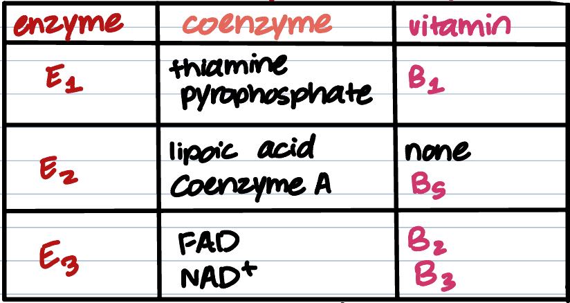
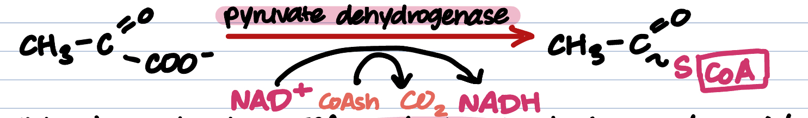
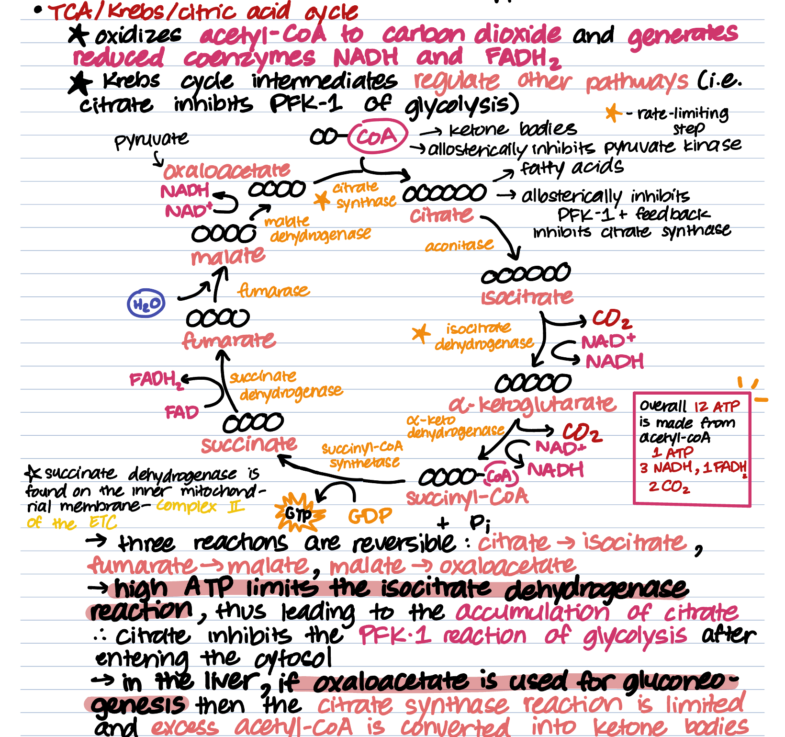

Welcome to the PDH reaction and the TCA cycle pathways! PDH can also be referred to as pyruvate oxidation and the TCA, or tricarboxylic acid cycle, is also called the Krebs cycle or the citric acid cycle. These reactions take place in the mitochondrial matrix, and is one of the four fates of the pyruvate molecule. In aerobic cellular respiration, this pathway follows glycolysis.
The PDH and TCA reactions are the second and third steps of aerobic respiration, respectively. Pyruvate oxidation requires the enzyme pyruvate dehydrogenase, which is an 3-enzyme complex. Each enzyme in the complex requires a coenzyme required from a vitamin, with the exception of lipoic acid in enzyme 2.

The TCA cycle requires 8 enzymes. They are citrate synthase, aconitase, isocitrate dehydrogenase, alpha-ketoglutarate dehydrogenase, succinyl-CoA synthetase, succinate dehydrogenase, fumarase, and malate dehydrogenase. In short, it generates reduced coenzymes, and oxidizes acetyl-CoA to carbon dioxide.
PDH and TCA generate reduced coenzymes/electron carriers that will be of use in the next pathway, the ETC! The TCA also generates CO2and citrate. Citrate is an extremely important inhibitor for other major pathways, such as glycolysis. It is a major source of energy, generating approximately 12 ATP per acetyl-CoA.
This process takes place after a meal, or during the fed state. Since it takes place in aerobic respiration, following glycolysis, it is also indirectly stimulated by insulin. Let's take a look at some other activators and inhibitors of each enzyme.
| Enzyme | Reaction | Activator | Inhibitor |
|---|---|---|---|
| Pyruvate dehydrogenase | pyruvate → acetyl-CoA | pyruvate, Ca2+ | high ATP and NADH levels |
| Citrate synthase | acetyl-CoA (and oxaloacetate) → citrate | — | ATP, NADH, citrate, succinyl-CoA |
| Isocitrate dehydrogenase | isocitrate → alpha-ketoglutarate | ADP, Ca2+ | ATP, NADH |
| Alpha-ketoglutarate dehydrogenase | alpha-ketoglutarate → succinyl-CoA | Ca2+ | ATP, NADH, succinyl-CoA |
Check out these diagrams, outlining the full picture of the pathways.

